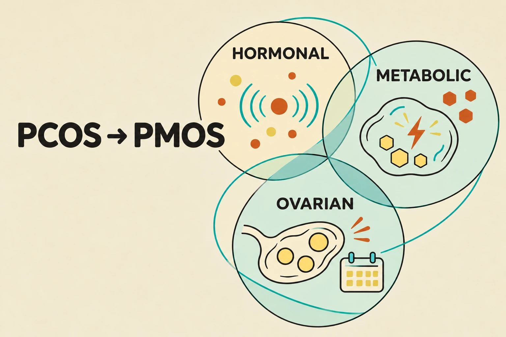

How can you support your wife as she manages PMOS (PCOS)?
Practical ways to support your wife through PMOS (PCOS), from building habits together to listening and backing her up when she asks.
Read article
Practical ways to support your wife through PMOS (PCOS), from building habits together to listening and backing her up when she asks.
Read articleWhy the birth control pill is prescribed for PMOS (PCOS), which symptoms it helps with, side effects, and what happens when you stop.
Read article
Reading time: 7 mins
PMOS stands for polyendocrine metabolic ovarian syndrome. Each word describes part of the condition, bringing its hormonal, metabolic and ovarian features together in one name.
Read article